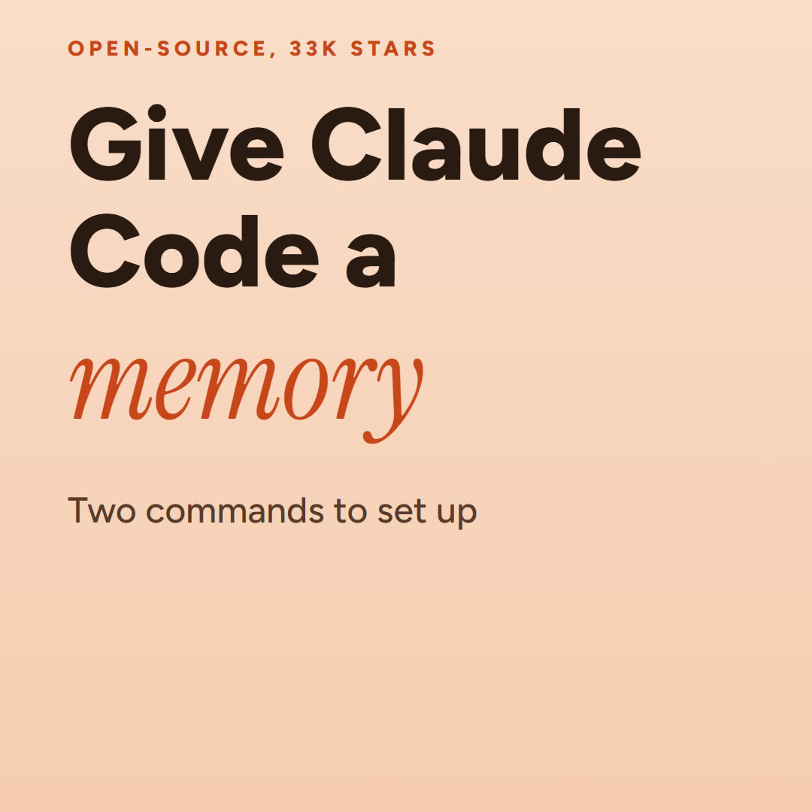

Cognee: give Claude Code a memory
Set up the open-source Cognee memory plugin so Claude Code remembers your project across sessions. For anyone who uses Claude Code.

Quick start
- In your terminal, add the marketplace:
claude plugin marketplace add topoteretes/cognee-integrations - Install the plugin:
claude plugin install cognee-memory@cognee - Start
claudeas usual. You should see a "Cognee Memory Connected" message.
What it is
Cognee is an open-source AI memory platform for agents (Apache-2.0). Its Claude Code plugin captures your prompts, the tool calls
Claude makes and its answers, turns them into a knowledge graph, and on your next prompt brings back the context that's relevant.
Before you start
- Claude Code with plugin support. The live status row and the two memory tools need Claude Code 2.1.287 or newer (2.1.286 in
the Desktop app); the memory itself works on any Claude Code that reads plugin settings.
- Python 3.10 to 3.14 installed on your computer for local mode (the default). The plugin builds its own environment from it and
never downloads Python for you. Check with python --version.
- No API key needed. With no key set, local mode runs the graph building through your own Claude Code login. That uses your
Claude plan's usage, and building the graph uses a lot of it. You can give it your own model key instead (Step 3).
Step 1: Install from your shell
Run both commands in a normal terminal, before you open Claude Code:
claude plugin marketplace add topoteretes/cognee-integrationsclaude plugin install cognee-memory@cognee
The install is global for your user. Add --scope project to the second command to keep it to one project.
Step 2: Start a session
- Run
claudein your project folder. - The first launch sets everything up: it starts a local Cognee server on your computer and builds its environment once.
- Look for the "Cognee Memory Connected" message.
- Installed from inside the chat with
/plugininstead? Start a new session first: memory only connects on a fresh launch.
Step 3: Pick how it builds the graph (optional)
Your settings live in one file, ~/.cognee/.env (made for you on the first start).
- Do nothing: it uses your Claude subscription (no key, uses your Claude limits).
- Your own model key: add a line
LLM_API_KEY="your key"to~/.cognee/.env. Then the graph building uses that provider instead. - Cognee Cloud or your own server: add
COGNEE_BASE_URL="..."andCOGNEE_API_KEY="..."to the same file. - Changes apply on the next session launch.
Try these
Ask Claude in plain words; the plugin picks the right skill:
remember that we use pytest, not unittestsearch Cognee for how we fixed the login bugprep my standuprecap my weekindex this repoforget what we talked about [topic]
Gotchas
- It uses your Claude limits when no key is set: every graph build is a real Claude run on your plan. Set
LLM_API_KEYto move
that cost to your own provider.
- Memory is kept until you delete it. Use the forget skill, or delete the dataset.
- What it captures: your prompts, Claude's tool calls and answers. Keys, credentials and
.envfiles are redacted or never
captured. To stop automatic capture, set COGNEE_CAPTURE=false in ~/.cognee/.env.
- Remove it:
/plugin uninstall cognee-memory@cognee
Links
Save it
- cognee-setup-guide.pdf 309 KB